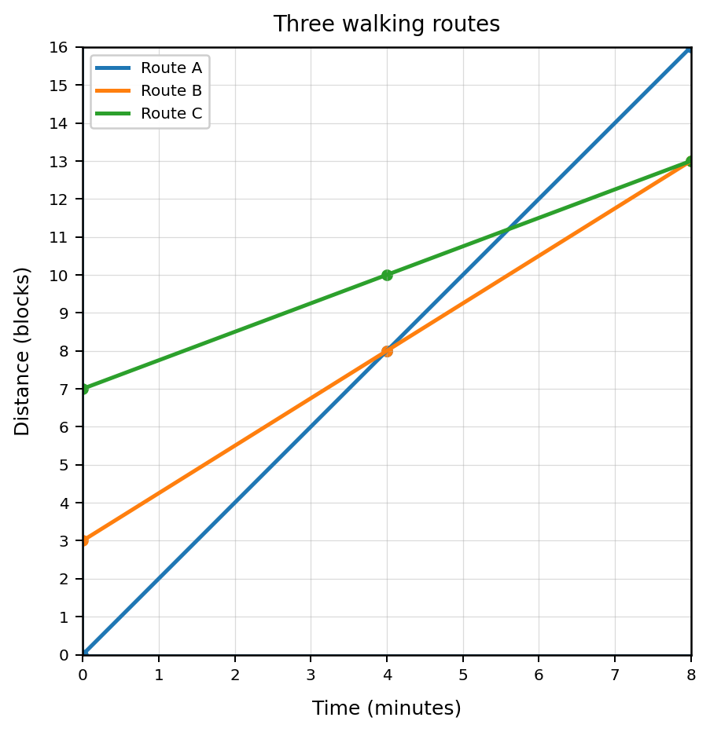
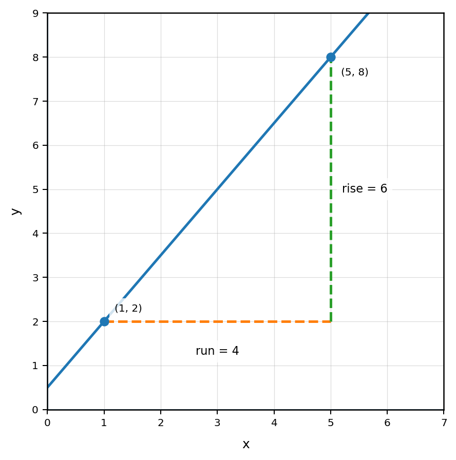
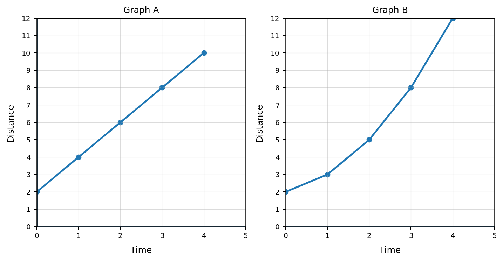

Mathematical idea: Slope is not just a number. It tells how fast a relationship changes and what that change means.
Today we will connect slope to graphs, tables, ordered pairs, and real situations. We will focus on the meaning of the change, not just the calculation.
Students will interpret slope as a measure of constant rate of change.
I can statements
This is a long-range preview for future lessons. Do not solve it today. Instead, annotate it individually. Circle anything familiar, underline symbols or directions that seem important, and write notes about what information you think will be needed later.
As you annotate, ask yourself: What is changing? Which route has the greatest rate of change? Does starting ahead always mean finishing ahead? What evidence from a graph, table, equation, or context could support a recommendation?
Future Task
Three students are comparing walking routes from school to a park. The graph shows distance traveled over time. A student says, “Route C is best because it starts ahead.”

Directions
Read the introduction aloud with a partner or in a small group. As you read, annotate the text by highlighting important ideas, circling key vocabulary, and writing short notes about connections, questions, or predictions in the margins.
A rate of change compares how one quantity changes when another quantity changes. If a person earns the same amount of money each hour, the rate of change tells how many dollars they earn for each hour.
In a graph, we often call this rate of change the slope. Slope compares the vertical change to the horizontal change. You may hear this described as “rise over run.” The rise is the change in output. The run is the change in input.
A constant rate of change means the relationship changes by the same amount again and again. In a table, equal input changes should create equal output changes. On a graph, a constant rate of change appears as a straight line.
Slope is most useful when we can explain it in context. A slope of $4$ might mean $4$ dollars per hour, $4$ miles per gallon, or $4$ gallons per minute. The number matters, but the units and meaning matter too.
Stop and Discuss
On a graph, slope compares the change in output to the change in input. A slope triangle can help you see both changes.
Use the graph and slope triangle to calculate the slope. Then explain what the rise and run represent.

A line passes through the points $(2,3)$ and $(6,11)$. Find the change in output, the change in input, and the slope. Explain what each part of your calculation means.
Stop and Discuss
A table can show slope by comparing how the output changes as the input changes. When the input changes by equal steps, look for equal changes in the output.
Find the rate of change from the table. Decide whether the rate of change is constant.
| Time (hours) | 0 | 2 | 4 | 6 |
|---|---|---|---|---|
| Distance (miles) | 5 | 17 | 29 | 41 |
A water tank is being filled. Use the table to find the rate of change and decide whether it is constant.
| Time (minutes) | 0 | 3 | 6 | 9 |
|---|---|---|---|---|
| Water (gallons) | 8 | 20 | 32 | 44 |
In a context, slope is a unit rate. It tells how much the output changes for each 1-unit change in the input.
Interpretation frame: For every $1$ unit increase in the input, the output changes by the slope amount.
A babysitter earns the same amount each hour. The table shows total earnings.
| Hours | 1 | 2 | 3 | 4 |
|---|---|---|---|---|
| Earnings | \$14 | \$28 | \$42 | \$56 |
A cyclist travels at a constant speed. After $2$ hours, the cyclist has traveled $26$ miles. After $5$ hours, the cyclist has traveled $65$ miles.
Stop and Discuss
Not every relationship has a constant rate of change. When the change keeps shifting, one slope cannot describe the whole relationship.
Decide which graph appears to have a constant rate of change. Use evidence from the graph to justify your answer.

A student says this table has a constant rate of change because the input increases by $1$ each time. Critique the statement.
| Input | 0 | 1 | 2 | 3 | 4 |
|---|---|---|---|---|---|
| Output | 2 | 5 | 9 | 14 | 20 |
Stop and Discuss
Optional Reflection: Look back at the future task. Do not solve it yet.